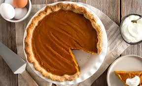

Delicious Pumpkin-Pie
Retun to Homepage

Description
Pumpkin-Pie is a staple at any holiday gathering you'll have this year. Featuring notes of cinnamon, and all the autumn flavors of allspice, this classic will be sure to please and delight.
Ingredients
These ingredients are pulled straight from www.eggs.ca
Pie pastry
- 1 1/2 cups (375mL) all-purpose flour
- ½ tsp (2.5mL) salt
- ½ cup (125mL) cold unsalted butter, cubed
- 1 egg yolk
- 3 tbsp (45 mL) ice-cold water (approx.)
Filling
- 14 oz (400g) (1 can) pure pumpkin purée
- 1 1/2 cups (375mL) 35% cream, divided
- ⅔ cup (170mL) firmly packed brown sugar
- 2 eggs, beaten
- ¼ cup (60mL) maple syrup
- 1 tsp (5mL) vanilla
- 1 tsp (5mL) ground cinnamon
- ½ tsp (2.5mL) ground ginger
- ¼ tsp (1.25mL) ground cloves
- ¼ tsp (1.25mL) ground nutmeg
- ¼ tsp (1.25mL) salt
- 2 tbsp (30mL) icing sugar